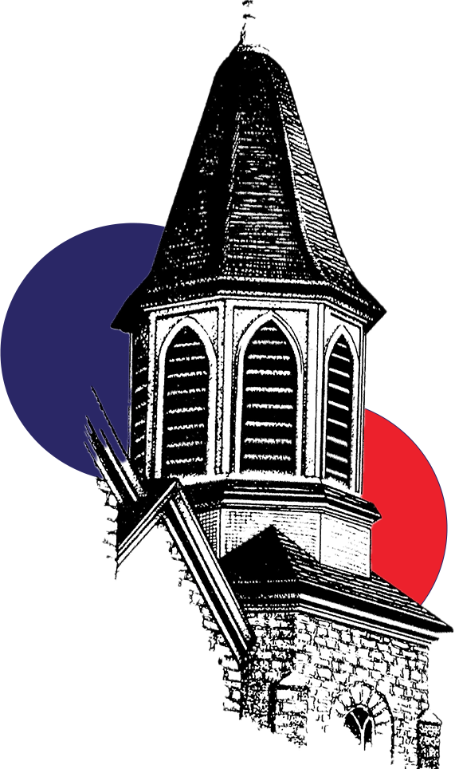
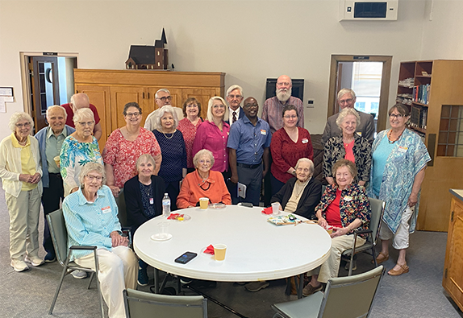
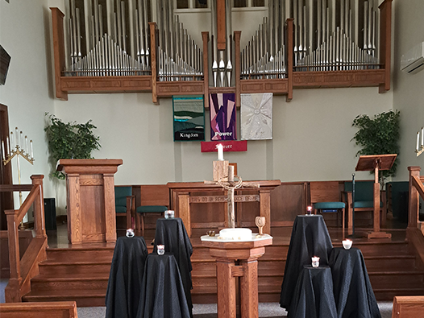
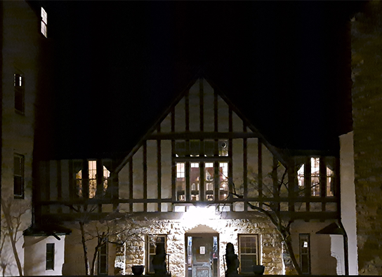

Newsletter
Stay up to date with our latest news and events by subscribing to our newsletter.

110 East Third Street Dixon, IL 61021
Our Mission Statement As followers of Jesus Christ, we will, by our intentional actions, seek a deeper relationship with God, listen for the Spirit's call to mission in our community, and prayerfully lead others to know the joy of God's love and to realize God's purpose for life's journey.
Learn more about Our Sunday service is at 9:30 a.m. with coffee & conversation following.

About Us
Calendar
Visit Our Social